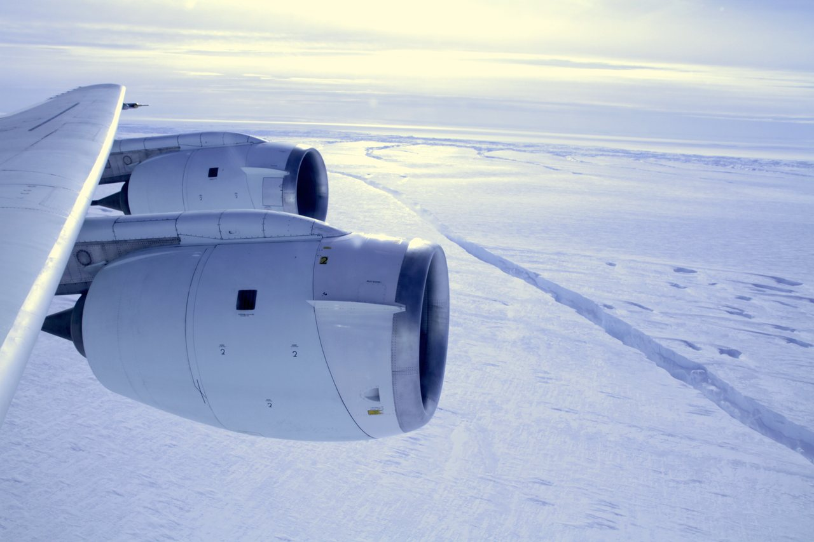

When a large mass of ice melts, the land underneath slowly rebounds, a bit like a mattress after someone gets up. In most places that process plays out over thousands of years. In parts of West Antarctica, though, satellite and ground instruments show bedrock rising by up to about 5 centimetres a year, much faster than the classic picture would predict.
A study published in Science on 12 November offers an explanation. The team, led by geophysics doctoral candidate Donna dePolo at the University of Colorado Boulder with colleagues including Shijie Zhong and Matt King of the University of Tasmania, built a three-dimensional model of how the mantle beneath West Antarctica flows.
Putting the mantle in 3D
Earlier work had mostly treated the mantle in simpler terms. The new model lets the temperature and stiffness, or viscosity, of the mantle vary with location and depth. The researchers combined it with a reconstruction of Antarctic ice loss from 1900 to 2020, then checked it against GPS measurements of ground motion and gravity changes recorded by the GRACE satellite missions. The calculations were run on a supercomputer in Wyoming.
The model reproduced both the ground motion and the gravity data. According to the paper, a weak layer in the upper mantle, with a viscosity that depends on temperature, fits both the fast rebound seen today and the slow churning of the mantle over millions of years. Some of the fastest uplift is under the Thwaites and Pine Island glaciers, two of the fastest-changing glaciers on the continent.
"Rapid ice loss, coupled with a weak upper mantle of the Earth, is allowing this response to happen within decades" (Donna dePolo, University of Colorado Boulder)
Why it matters for sea level
How quickly the ground rises matters for the ice. Rising bedrock can change how deep the water is where glaciers meet the sea, which affects how fast they retreat. Earlier modelling, including a 2025 study in Nature Communications, has suggested that bedrock uplift could reduce Antarctica's contribution to sea-level rise over the coming centuries. Better models of the solid Earth beneath the ice are needed to make those projections reliable.

The new paper does not itself forecast the future of the ice sheet. Its contribution is a model of the mantle that is consistent with more than a century of reconstructed ice loss and with modern measurements, which other researchers can now build on. The authors also note that the work depends on a small number of research stations in remote parts of Antarctica that track how the crust moves.
The study is peer reviewed. News coverage so far has relied on the authors' own account, and we did not find comment from independent scientists.